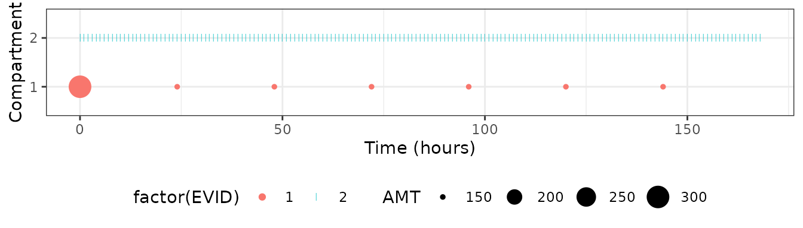

Built 2024-06-19 using NMsim 0.1.0.950.
A basic simulation data set
As long as a simulation data set is in a data.frame
structure with columns and values compatible with the Nonmem model(s) to
be simulated, it does not matter to NMsim how it was
created. However, NMsim and NMdata do provide
powerful methods to easily create such data sets.
As an example we create a regimen with a loading dose of 300 mg followed by 150 QD for 6 days. We dose into compartment 1, and we want to simulate samples in the second compartment. These numbers depend on the model which the data set is intended to be used with.
NMcreateDoses() is a flexible function that creates
dosing records based on a concise syntax. We add a label to the regimen
right away.
### multiple dose regimens with loading are easily created with NMcreateDoses too
## We use ADDL+II (either method easy)
doses <- NMcreateDoses(TIME=c(0,24),AMT=c(300,150),addl=data.frame(ADDL=c(0,5),II=c(0,24)),CMT=1)
doses <- transform(doses,trt="300 mg then 150 mg QD")
## Notice, the ID and MDV columns are included
doses
#> ID TIME EVID CMT AMT II ADDL MDV trt
#> <int> <num> <num> <num> <num> <num> <num> <num> <char>
#> 1: 1 0 1 1 300 0 0 1 300 mg then 150 mg QD
#> 2: 1 24 1 1 150 24 5 1 300 mg then 150 mg QDNow we add the sample records using addEVID2().
## Add simulation records - longer for QD regimens
dat.sim <- addEVID2(doses,time.sim=0:(24*7),CMT=2)dat.sim is now a valid simulation data set with one
subject. However, even though addEVID2() does try to order
the data in a meaningful way, it is recommended to always manually order
the data set. We use data.table’s setorder().
dplyr::arrange can just as well be used. A row identifier
(counter) can make post-processing easier, so we add that too.
## sort data set
setorder(dat.sim,ID,TIME,EVID)
## Adding a row identifier (generally not necessary but recommended)
dat.sim$ROW <- 1:nrow(dat.sim)NMsim does not include any plotting functionality, but
here is a simple way to show dosing amounts and sample times.
NMdata::NMexpandDoses() is used to expand the
doses coded with ADDL/II in order to get a
data row to plot for each dose. We also take the sum of the amounts by
time point in case doses are simultaneous.
dtplot <- NMdata::NMexpandDoses(dat.sim,as.fun="data.table")
dtplot <- dtplot[,.(AMT=sum(AMT)),by=.(ID,CMT,TIME,EVID)]
ggplot(dtplot,aes(TIME,factor(CMT),colour=factor(EVID)))+
geom_point(data=function(x)x[EVID==1],aes(size=AMT))+
geom_point(data=function(x)x[EVID==2],shape="|")+
labs(x="Time (hours)",y="Compartment")+
theme(legend.position="bottom")
A brief overview of the number of events broken down by event type
EVID and dose amount AMT:
| trt | CMT | EVID | AMT | Nrows |
|---|---|---|---|---|
| 300 mg then 150 mg QD | 1 | 1 | 150 | 6 |
| 300 mg then 150 mg QD | 1 | 1 | 300 | 1 |
| 300 mg then 150 mg QD | 2 | 2 | NA | 169 |
Showing the top five rows for understanding what the data now looks like. Notice that the following are not issues:
- Data contains a mix of numeric and non-numeric columns
- Columns are not sorted in Nonmem-friendly style with non-numeric columns to the right
#> ID TIME EVID CMT AMT II ADDL MDV trt DV
#> <int> <num> <num> <num> <num> <num> <num> <num> <char> <num>
#> 1: 1 0 1 1 300 0 0 1 300 mg then 150 mg QD NA
#> 2: 1 0 2 2 NA NA NA 1 300 mg then 150 mg QD NA
#> 3: 1 1 2 2 NA NA NA 1 300 mg then 150 mg QD NA
#> 4: 1 2 2 2 NA NA NA 1 300 mg then 150 mg QD NA
#> 5: 1 3 2 2 NA NA NA 1 300 mg then 150 mg QD NA
#> ROW
#> <int>
#> 1: 1
#> 2: 2
#> 3: 3
#> 4: 4
#> 5: 5Finally, We check the simulation data set for various potential
issues in Nonmem data sets using NMdata::NMcheckData and
summarize the number of doses and observations:
NMdata::NMcheckData(dat.sim,type.data="sim")
#> No findings. Great!Add time after previous dose and related information
Just like for preparation of data set with observed data, time after
previous dose may be the relevant time to analyze the simulation results
against. We use NMdata::addTAPD() to add this
automatically.
dat.sim2 <- addTAPD(dat.sim)
head(dat.sim2)
#> ID TIME EVID CMT AMT II ADDL MDV trt DV
#> <int> <num> <num> <num> <num> <num> <num> <num> <char> <num>
#> 1: 1 0 1 1 300 0 0 1 300 mg then 150 mg QD NA
#> 2: 1 0 2 2 NA NA NA 1 300 mg then 150 mg QD NA
#> 3: 1 1 2 2 NA NA NA 1 300 mg then 150 mg QD NA
#> 4: 1 2 2 2 NA NA NA 1 300 mg then 150 mg QD NA
#> 5: 1 3 2 2 NA NA NA 1 300 mg then 150 mg QD NA
#> 6: 1 4 2 2 NA NA NA 1 300 mg then 150 mg QD NA
#> ROW DOSCUMN TPDOS TAPD PDOSAMT DOSCUMA
#> <int> <int> <num> <num> <num> <num>
#> 1: 1 1 0 0 300 300
#> 2: 2 0 NA NA NA 0
#> 3: 3 1 0 1 300 300
#> 4: 4 1 0 2 300 300
#> 5: 5 1 0 3 300 300
#> 6: 6 1 0 4 300 300Here is something important to decide for simulations. Notice
TAPD for the sample at TIME==0.
addTAPD does not use the order of the data set to determine
the time-order or the records. The default behavior of
addTAPD is to treat a sample taken at the exact same time
as a dose as a pre-dose. If instead we want them to be considered
post-dose, we have to specify how to order EVID
numbers.
## order.evid=c(1,2) means doses are ordered before EVID=2 records
dat.sim2 <- addTAPD(dat.sim,order.evid=c(1,2))
## now the TIME=0 sample has TAPD=0
head(dat.sim2)
#> ID TIME EVID CMT AMT II ADDL MDV trt DV
#> <int> <num> <num> <num> <num> <num> <num> <num> <char> <num>
#> 1: 1 0 1 1 300 0 0 1 300 mg then 150 mg QD NA
#> 2: 1 0 2 2 NA NA NA 1 300 mg then 150 mg QD NA
#> 3: 1 1 2 2 NA NA NA 1 300 mg then 150 mg QD NA
#> 4: 1 2 2 2 NA NA NA 1 300 mg then 150 mg QD NA
#> 5: 1 3 2 2 NA NA NA 1 300 mg then 150 mg QD NA
#> 6: 1 4 2 2 NA NA NA 1 300 mg then 150 mg QD NA
#> ROW DOSCUMN TPDOS TAPD PDOSAMT DOSCUMA
#> <int> <int> <num> <num> <num> <num>
#> 1: 1 1 0 0 300 300
#> 2: 2 1 0 0 300 300
#> 3: 3 1 0 1 300 300
#> 4: 4 1 0 2 300 300
#> 5: 5 1 0 3 300 300
#> 6: 6 1 0 4 300 300addTAPD uses NMdata::NMexpandDoses to make
sure all dosing times are considered. See ?NMdata::addTAPD
for what the other created columns mean and for many useful
features.
Multiple endpoints (e.g. parent and metabolite)
Pass a data.frame to addEVID2’s CMT argument to include
multiple endpoints.
addEVID2(doses,CMT=data.frame(CMT=c(2,3),DVID=c("Parent","Metabolite")),time.sim=1:2)
#> ID TIME EVID CMT AMT II ADDL MDV trt DV
#> <int> <num> <num> <num> <num> <num> <num> <num> <char> <num>
#> 1: 1 0 1 1 300 0 0 1 300 mg then 150 mg QD NA
#> 2: 1 1 2 2 NA NA NA 1 300 mg then 150 mg QD NA
#> 3: 1 1 2 3 NA NA NA 1 300 mg then 150 mg QD NA
#> 4: 1 2 2 2 NA NA NA 1 300 mg then 150 mg QD NA
#> 5: 1 2 2 3 NA NA NA 1 300 mg then 150 mg QD NA
#> 6: 1 24 1 1 150 24 5 1 300 mg then 150 mg QD NA
#> DVID
#> <char>
#> 1: <NA>
#> 2: Parent
#> 3: Metabolite
#> 4: Parent
#> 5: Metabolite
#> 6: <NA>Cohort-dependent or individual sampling schemes
Same way as for the CMT argument, time.sim
can also be a data.frame. If it contains a covariate found
in the doses data, the added simulation times will be merged on
accordingly. You can use say a cohort identifier, or it could be
ID which allows you to reuse (all or parts of) the observed
sample times.